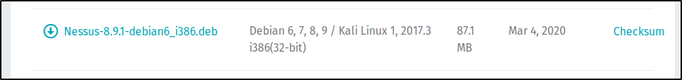
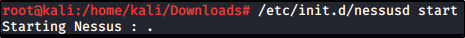
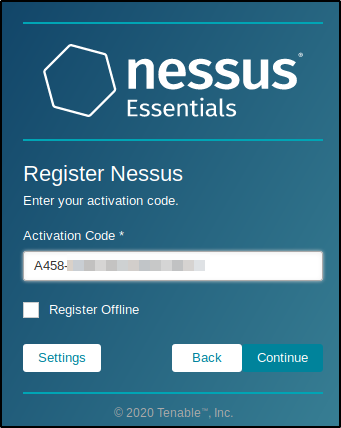

Scanning with Nessus - Part 1
Nessus
A Famous Vulnerability Scanner (there is the open version called OpenVAS)
Let's start downloading the 64 Debian Version:
https://www.tenable.com/downloads/nessus?loginAttempted=true


Let's install using “dpkg”: at the end of the installation we will be suggested to start and try Nessus


So let's get started:




Select “Nessus Essentials” and provida a valid Name, Surname and Email


Now, just log into your email to get the activation code:


After the activation code, you need to provide an username and password:


At this point, Nessus will download his essential plugins:


What you can do with Nessus Essentials
Basic Scan
You can scan hosts on your INTERNAL NETWORK, not EXTERNAL NETWORK, up to 16 Hosts (Nessus Essentials limitation).
When you start, you have no scans done: you can start one with “New Scan” Button


We can do a lot of scans, just try a Basic Network Scan:


Once selected the scan, we need to set up the options:


We can set up a schedule too, if we want (not required):


But we need to look for more settings, as in Discovery tab


In assessment, will try to do a Web Vulnerability scan:


To start the scan, simply press the Play button:


This is how a scan results are shown:


Advanced Scan
For more advanced scan configuration, select the Advanced Scan: